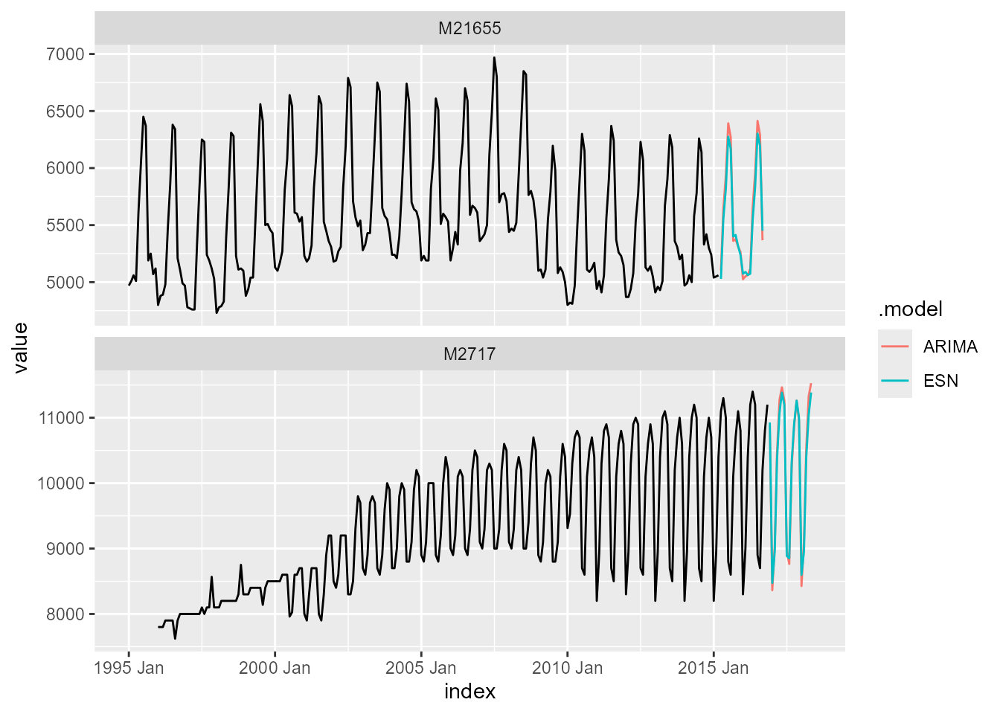

Prepare dataset
In this example, we will use the m4_data. The dataset is
a monthly tsibble, which is filtered to include only the
time series "M21655" and "M2717". The
resulting object train_frame contains the training data and
is visualized below.
train_frame <- m4_data %>%
filter(series %in% c("M21655", "M2717"))
train_frame
#> # A tsibble: 494 x 4 [1M]
#> # Key: series [2]
#> series category index value
#> <chr> <fct> <mth> <dbl>
#> 1 M21655 Demographic 1995 Jan 4970
#> 2 M21655 Demographic 1995 Feb 5010
#> 3 M21655 Demographic 1995 Mrz 5060
#> 4 M21655 Demographic 1995 Apr 5010
#> 5 M21655 Demographic 1995 Mai 5610
#> 6 M21655 Demographic 1995 Jun 6040
#> 7 M21655 Demographic 1995 Jul 6450
#> 8 M21655 Demographic 1995 Aug 6370
#> 9 M21655 Demographic 1995 Sep 5190
#> 10 M21655 Demographic 1995 Okt 5250
#> # ℹ 484 more rows
p <- ggplot()
p <- p + geom_line(
data = train_frame,
aes(
x = index,
y = value),
linewidth = 0.5
)
p <- p + facet_wrap(
vars(series),
ncol = 1,
scales = "free")
p
Train ESN model
The function ESN() is used in combination with
model() from the fabletools package to train
an Echo State Network for the variable value. The trained
models are stored as a mable (i.e., model table).
Additionally, an ARIMA() model is trained as benchmark.
mable_frame <- train_frame %>%
model(
"ESN" = ESN(value),
"ARIMA" = ARIMA(value)
)
mable_frame
#> # A mable: 2 x 3
#> # Key: series [2]
#> series ESN ARIMA
#> <chr> <model> <model>
#> 1 M21655 <ESN({243, 97, 194}, {36.57, 0.0046})> <ARIMA(1,0,0)(1,1,2)[12]>
#> 2 M2717 <ESN({251, 100, 200}, {31.91, 0.0046})> <ARIMA(2,1,4)(0,1,0)[12]>Forecast ESN model
Forecasts are generated via the function forecast(),
where the forecast horizon is set to h = 18 (i.e., 18-month
ahead forecasts). The forecasts are stored as fable (i.e.,
forecast table) and visualized along the historic training
data.
fable_frame <- mable_frame %>%
forecast(h = 18)
fable_frame
#> # A fable: 72 x 5 [1M]
#> # Key: series, .model [4]
#> series .model index value .mean
#> <chr> <chr> <mth> <dist> <dbl>
#> 1 M21655 ESN 2015 Apr N(5032, NA) 5032.
#> 2 M21655 ESN 2015 Mai N(5558, NA) 5558.
#> 3 M21655 ESN 2015 Jun N(5820, NA) 5820.
#> 4 M21655 ESN 2015 Jul N(6273, NA) 6273.
#> 5 M21655 ESN 2015 Aug N(6157, NA) 6157.
#> 6 M21655 ESN 2015 Sep N(5369, NA) 5369.
#> 7 M21655 ESN 2015 Okt N(5389, NA) 5389.
#> 8 M21655 ESN 2015 Nov N(5293, NA) 5293.
#> 9 M21655 ESN 2015 Dez N(5224, NA) 5224.
#> 10 M21655 ESN 2016 Jan N(5055, NA) 5055.
#> # ℹ 62 more rows
fable_frame %>%
autoplot(train_frame, level = NULL)